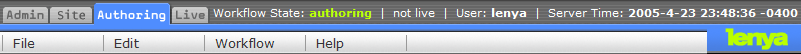

Apache Lenya - Open Source Content Management (Java/XML)

Apache Lenya is an Open Source Java/XML Content Management System and comes with revision control, multi-site management, scheduling, search, WYSIWYG editors, and workflow. Please see some screenshots or try the Demo.
Downloads
The current stable version of Apache Lenya is 1.2.5. This is the recommended version for production use. You will at least need the Java 2 Platform, Standard Edition, version 1.4.2. Please follow the installation instructions.
- Lenya 1.2.5 Windows binary (ZIP archive) ASC Signature MD5 Checksum
- Lenya 1.2.5 Windows source code (ZIP archive) ASC Signature MD5 Checksum
- Lenya 1.2.5 Unix binary (tar.gz archive) ASC Signature MD5 Checksum
- Lenya 1.2.5 Unix source code (tar.gz archive) ASC Signature MD5 Checksum
The Apache Software Foundation has more information on ASC Signatures and MD5 checksums.
Please go to the download section of version 1.2 for more download options such as Subversion.
You may also download 2.0, the current development version, although this is still under heavy development and should not be used for production yet.
Features
If you have additional requirements beyond the features listed below, you have access to all Apache Cocoon features to develop them.
Authoring
- Browser-based WYSIWYG Editors are provided that validate input against a RELAX NG Schema. This prevents invalid markup as produced by other WYSIWYG editors and enables enforcement of web site style guidelines. Lenya ships with the BXE and Kupu editors out of the box. Asset management and link management are integrated into BXE and Kupu.
- A forms editor is available for situations where a full-blown WYSIWYG editor is overkill or where legacy browsers need to be supported.
- Pages that are being edited are automatically locked for other users, preventing conflicting changes to the same page.
- Each edit of a page creates a new revision, and you can revert to any previous revision of a page.
Workflow
- Lenya includes a customizable workflow engine that uses an easy XML format to define workflows. Standard one- and two-stage workflows are included. Users can be notified by email about pending approvals.
- Workflow events such as publishing or deactivating a page can be scheduled.
- Separate authoring, staging and live areas are supported. For convenience, the staging area is disabled by default.
- All workflow steps are logged, providing an audit trail.
Internationalization
- Pages can be created in multiple languages with no impact on your site structure. Lenya automatically displays your page in the default languge if it is not available in a specific language.
- The user interface is currently localized in Spanish, Italian, French, German, English, Dutch and Japanese.
Layout
- The "publications" concept allows reuse of the information architecture of a site and brings modularity to the content level. Different publications (sites) can share content and business logic, and new publications can be created with a cloning process.
- XHTML+CSS templating is supported, eliminating the need to learn yet another templating language. Wherever possible, Lenya uses CSS for styling, thereby enforcing the separation of content and layout.
- The navigation framework automatically creates navigation items such as menus, breadcrumb paths and tabs. A site map can be easily created.
- Lenya produces clean URLs without request parameters and is thus optimally accessible to search engines.
- There are no restrictions on the nesting of templates. You can use any template you have defined at any level of your site structure thanks to the URI parameterizer.
Site Management
- You can move, copy, rename, archive or delete individual pages or whole parts of your site with an easy to use site view that shows you the pages of your site in an explorer-like view.
- Each page has tabs for easy access to meta data, assets, workflow status, revisions, access control and scheduling.
- The archive function allows you to deactiviate pages and store them in an archive.
- Deleted pages can be retrieved from the trash.
- Each page can have Dublin Core metadata assigned. Other metadata standards can be added if required.
- Asset management allows you to keep track of images and documents that belong to a page.
- Link management ensures that internal links are not shown if the target page doesn't exist or the user has no access to it. Link management also warns users about broken links when they publish a page.
- Before publishing a page, Lenya checks whether parent pages are already published, to avoid inconsistent sites.
- Deployment is flexible: Sites can be served dynamically by the authoring server (for small deployments) or another servlet container. It is also possible to export content statically or to use Apache HTTP Server as a proxy.
- If used with a reverse proxy, URLs can be rewritten based on the site structure of the live site.
Security
- Each page or parts of your site can be protected by SSL. You can protect just the parts of your site that need protection for best performance.
- The access control mechanism allows you to restrict access to parts of your site to members of a group or individuals. You can restrict access by function, such as viewing, editing, approval or administration.
- Users can be authenticated against an LDAP server.
- Access can also be controlled by IP ranges.
Misc
- A Windows Installer makes installation on Windows a 3-click process.
- Apache Lucene is integrated for full-text and fielded searching.
Under the Hood
- Lenya is based on Apache Cocoon. All Cocoon components can be used to develop customized functionality.
- Lenya uses Unit Tests to discover regressions in the code.
- A publication API defines an interface for common CMS operations.
- A "fallback" mechanism allows you to selectively override core functionality in your site where needed. Default implementations are provided for convenience and ease of development.
- Ant is used for portable scripting.